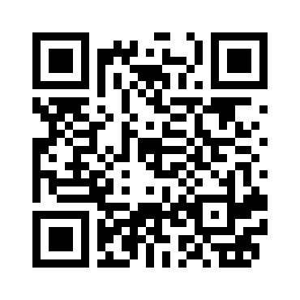

Automatización simple con QR
Dispen-easy es una solución tecnológica para la distribución automatizada de productos de limpieza líquidos, activada por códigos QR y controlada mediante microcontroladores ESP32.
Contacto:
+54 9 3758 551339
victorapostoles@gmail.com
